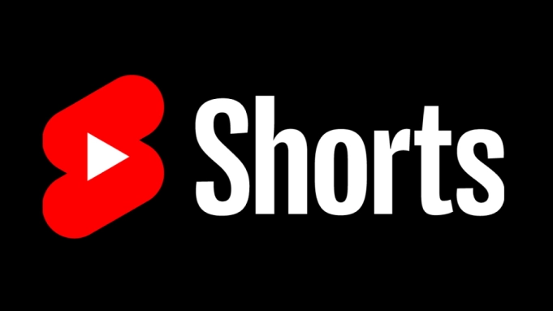
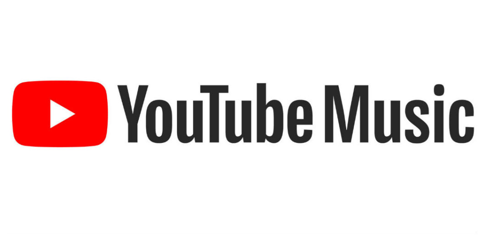
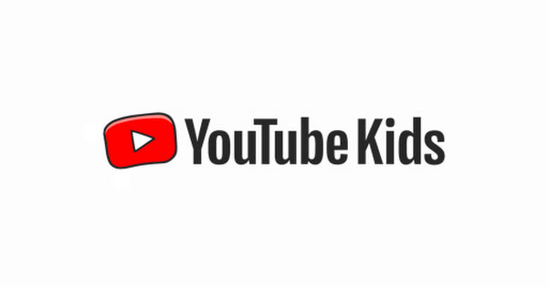
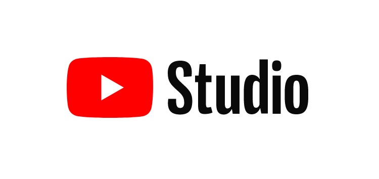

YouTube Shorts is a way for anyone to connect with a new audience using just a smartphone and the Shorts camera in the YouTube app. YouTube's Shorts creation tools makes it easy to create short-form videos that are up to 60 seconds long with our multi-segment camera.


YouTube Music is free to download and use. Viewers can also use a YouTube Music Premium membership to get ad-free videos and download music to listen offline, in the background, or without video.

YouTube gives two primary options to keep kids safe from inappropriate content — Restricted Mode and YouTube Kids. Restricted Mode is better suited for pre-teens and teens, whereas YouTube Kids is tailored for pre-school and early elementary age kids.

YouTube Studio is the home for creators. You can manage your presence, grow your channel, interact with your audience and make money all in one place. You can also use YouTube Studio with the YouTube Studio app on your mobile device.